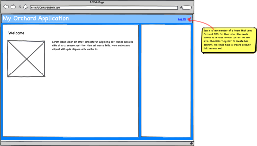
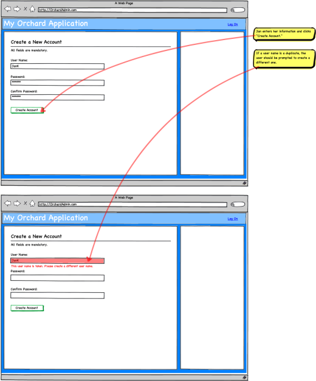
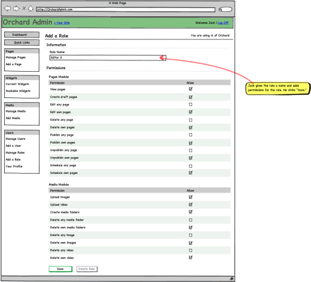
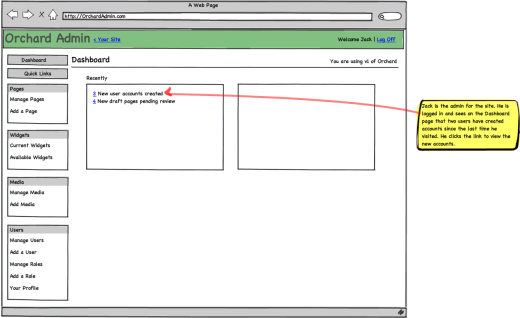
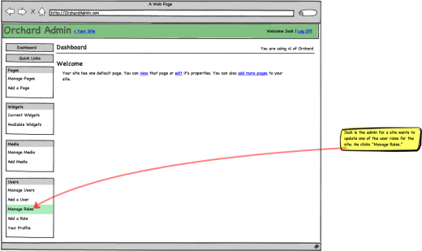
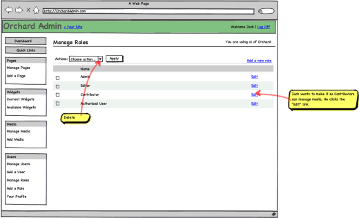
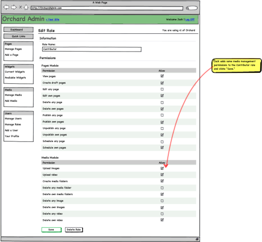
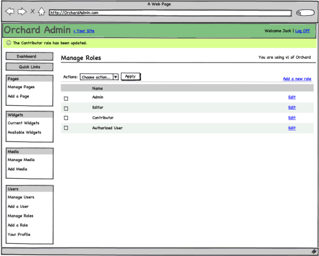

Requirements
- Do not couple authentication to membership and profile data
- Ability to plug-in and combine multiple authentication schemes (internal AD, OpenID, etc.)
- Must enable creation of roles by administrators and modules
- Must be able to store custom and extensible information about users
- Ability for areas to extend user profiles
- Allow administrators to set-up user permissions in a scalable manner (adding more users and features do not result in non-linear growth of workload for the administrator)
- Allows modules to expose permissions
- Permission checking logic can be replaced
Non goals
- ACL-type of permission system with allow/deny and priorities
- Setting permissions at the content item or instance level
Scenarios
A user can log into the application using his existing OpenID account
A user can create a new user account
This should include a default captcha mechanism and provide extensibility points to replace it.
An administrator can create a new user account
The account verification is bypassed in this case.
A user can access and modify all his profile information
This is by law in many countries.
This includes subscriptions, etc.
A user can delete his account
An administrator can create new roles and assign users to roles
A module author can add new roles and profile properties
An administrator can manage user membership in groups
An administrator can modify a user's profile
An administrator can delete or ban a user
User creation can be configured to require validation and/or confirmation
A user can recover a lost password
If not using OpenID.
An administrator can personalize automatic e-mail messages to the users
Messages include welcome message (with or without approval), approval notices, password recovery, account activation, account banned or account deleted.
A module can expose permissions
A module exposes what operations can be configured to be allowed or denied to specific groups.
An administrator can configure what groups are allowed to perform operations
Default roles
Orchard comes installed with some default roles. New packages should provide default permission settings for those default roles to minimize the administrator's workload when adding a new package to the system.
Those roles are:
- Anonymous user (cannot be removed)
- Authenticated user (cannot be removed)
- Owner (cannot be removed, and is dynamically determined based on the object being verified)
- Administrator (cannot be removed)
- Author (typically creates new contents and can manage their own)
- Editor (can modify and publish contents created by authors)
Permissions
As part of our initial implementation of the permission system, we are retrofitting the following permissions into the existing Orchard packages.
Administration UI
Default permissions are:
| Permission | Anon. | Authentic. | Owner | Admin. | Author | Editor |
|---|---|---|---|---|---|---|
| Access the administration UI | No | No | Yes | Yes | Yes | Yes |
User/Role/Permission editing
Default permissions are:
| Permission | Anon. | Authentic. | Owner | Admin. | Author | Editor |
|---|---|---|---|---|---|---|
| Manage permissions | No | No | Yes | Yes | No | No |
| Create & manage users | No | No | Yes | Yes | No | No |
| Create & manage roles | No | No | Yes | Yes | No | No |
| Assign users to roles | No | No | Yes | Yes | No | No |
Note: the site owner not only has this permission by default but it also cannot be revoked from him, which is a special case.
Blog
See Blog package.
CMS Pages
See CMS scenarios.
Media
See Media management.
XML-RPC operations
See XML-RPC.
Tags
See Tags.
Comments
See Comments.
Error messages
When an operation can't be performed due to a permission issue, the user gets the following message if he's not authenticated:
"You are not allowed to perform this operation. Please log into the site and try again."
If he's authenticated:
"You are not allowed to perform this operation. Please contact the site administrator if you think this is an error."
Flows
User self-creation




Add a role



Modify roles for a user



Modify permissions for a role



